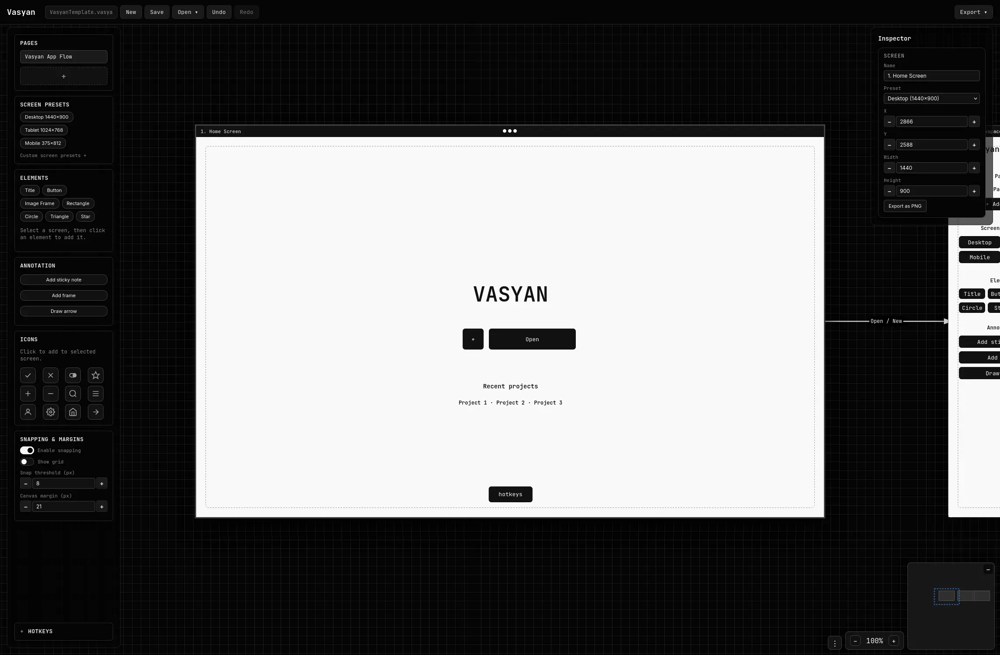
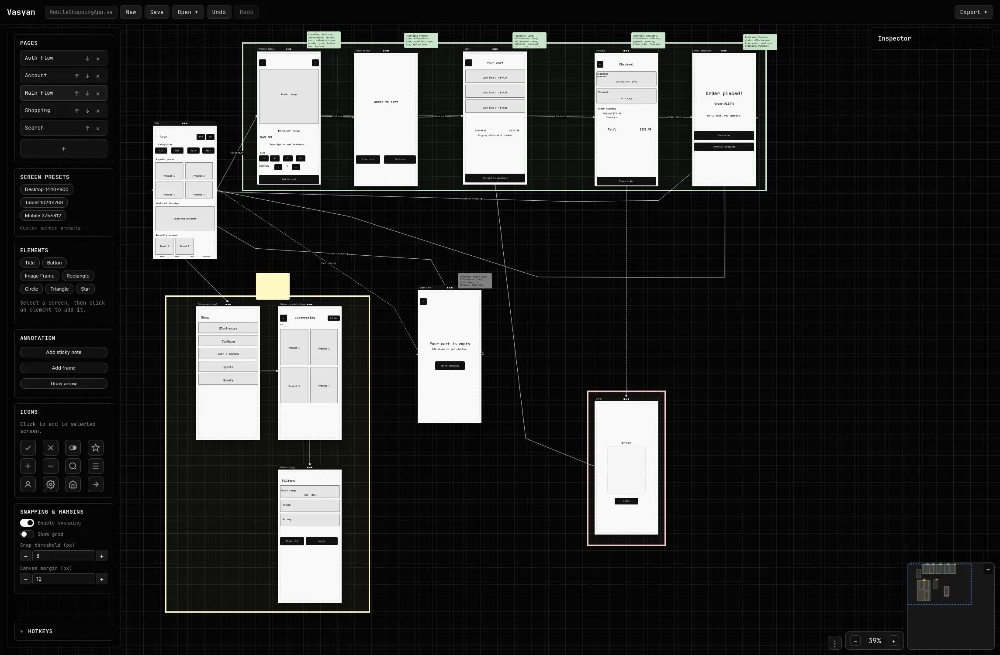
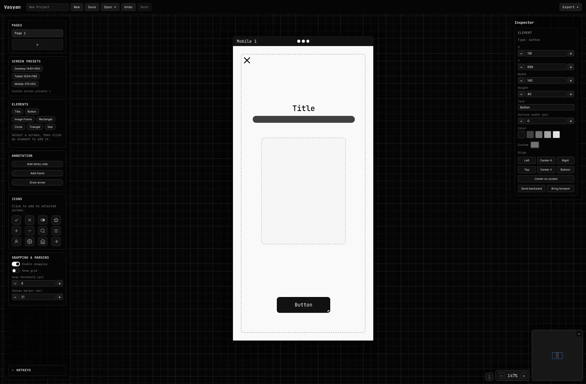

Vasyan
Wireframe and prototype builder
UX software feels like it was designed for everything except the moment you're trying to think: too many panels, too many options, too much setup—when all you want is to map a flow and get a solid idea on the screen.
Vasyan keeps wireframing simple on purpose, so you can stay in your design headspace, explore quickly, and iterate toward better UX without the tool becoming the project.



Sign up for beta